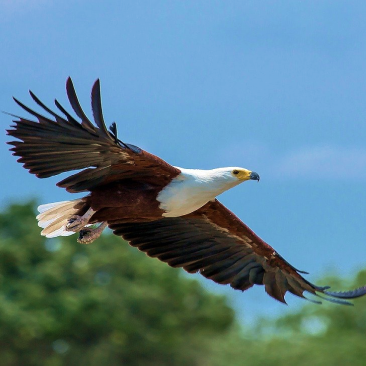

The site was founded on the basis of a volunteer movement to
protect and care for animals.
How it works
The main goal is to help the animals, as well as the nature
reserves and zoos where they are kept. We are currently working on
video projects targeting pandas in China, eagles on an island near
Los Angeles, alligators in Florida and gorillas in the Congo.
These have a total of more than 1,500 mammals and reptiles.
Giant panda
Southwest China
GIANT PANDAS
Native to Southwest China

Eagle
South America
EAGLES
Native to South America
Gorilla
Congo
GORILLAS
Native to Congo
Two-Toed Sloth
South America
TOW-TOED SLOTH
Native to Mesoamerica, South America
Cheetah
Africa
CHEETAHS
Native to Africa
Penguin
Antarctica
PENGUINS
Native Antarctica
Pick and feed a friend
We know the animals bring you joy, and in these extraordinary times,
we’re glad.
During a time when the COVID-19 epidemic is touching all of our
lives, we’re proud and glad that people around the world find joy in
PetStory
Even though the zoo has reopened, we need you now more than ever to
help us deal with these problems. Please consider a gift to our
Emergency Support Fund .
How it works
Pay with card
Payment goes to the zoo
Your favourite animal gets delicious dish
Testimonials
Michael John
Local Austriatoday
The best online zoo I’ve met. My son delighted very much ljves
to watch gouillas. Online zoo is one jf the ways to instill a
love for animals.The best online zoo I’ve met. My son
delighted very much ljves to watch gouillas. Online zoo is one
jf the ways to instill a love for animals.
The best online zoo I’ve met. My son delighted very much ljves
to watch gouillas. Online zoo is one jf the ways to instill a
love for animals.The best online zoo I’ve met. My son
delighted very much ljves to watch gouillas. Online zoo is one
jf the ways to instill a love for animals.
Oskar Samborsky
Local AustriaYesterday
Online zoo is one jf the ways to instill a love for
animals.The best online zoo I’ve met. My son delighted very
much ljves to watch gouillas. Online zoo is one jf the ways to
instill a love for animals.The best online zoo I’ve met. My
son delighted very much ljves to watch gouillas.
The best online zoo I’ve met. My son delighted very much ljves
to watch gouillas. Online zoo is one jf the ways to instill a
love for animals.The best online zoo I’ve met. My son
delighted very much ljves to watch gouillas. Online zoo is one
jf the ways to instill a love for animals.
The best online zoo I’ve met. My son delighted very much ljves
to watch gouillas. Online zoo is one jf the ways to instill a
love for animals.The best online zoo I’ve met. My son
delighted very much ljves to watch gouillas. Online zoo is one
jf the ways to instill a love for animals.
Fredericka Michelin
Local AustriaYesterday
The best online zoo I’ve met. My son delighted very much ljves
to watch gouillas. Online zoo is one jf the ways to instill a
love for animals.The best online zoo I’ve met. My son
delighted very much ljves to watch gouillas. Online zoo is one
jf the ways to instill a love for animals.
The best online zoo I’ve met. My son delighted very much ljves
to watch gouillas. Online zoo is one jf the ways to instill a
love for animals.The best online zoo I’ve met.
The best online zoo I’ve met. My son delighted very much ljves
to watch gouillas. Online zoo is one jf the ways to instill a
love for animals.The best online zoo I’ve met. My son
delighted very much ljves to watch gouillas. Online zoo is one
jf the ways to instill a love for animals.
Mila Riksha
Local AustriaYesterday
My son delighted very much ljves to watch gouillas. Online zoo
is one jf the ways to instill a love for animals.The best
online zoo I’ve met. My son delighted very much ljves to watch
gouillas. Online zoo is one jf the ways to instill a love for
animals.The best online zoo I’ve met. My son delighted very
much ljves to watch gouillas. Online zoo is one jf the ways to
instill a love for animals.The best online zoo I’ve met. My
son delighted very much ljves to watch gouillas.
The best online zoo I’ve met. My son delighted very much ljves
to watch gouillas. Online zoo is one jf the ways to instill a
love for animals.The best online zoo I’ve met. My son
delighted very much ljves to watch gouillas. Online zoo is one
jf the ways to instill a love for animals.